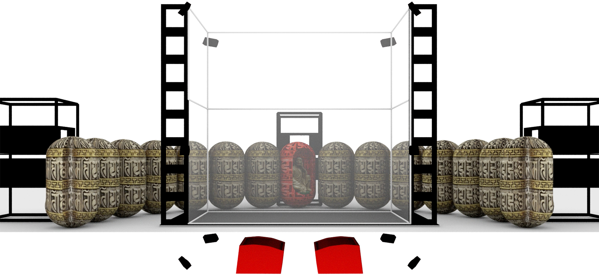
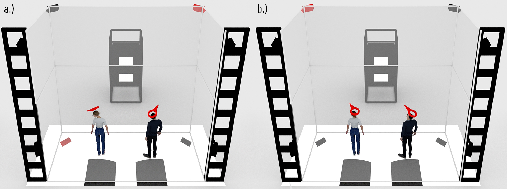

Visionary Movie
Abstract
10.000 Buddhas is a digital art installation using VR immersive environments. The artwork's central elements are the statues at the Ten Thousand Buddhas Monastery in Hong Kong [1]. Digital replicas of these statues populate the virtual environment. Using the EVE (Evolutive Virtual Environment) system [2], the users can immerse themselves in the monastery's virtual reinterpretation.
The EVE system is a multi-user CAVE allowing double stereoscopy. It incorporates high-quality hardware, such as an ambisonic sound system, high-precision tracking, haptic devices,and Barco projectors. This project will utilise Unreal Engine to control the listed technology and provide a holistic experience.

Figure 1. Overview of the 10.000 Buddhas artwork during operation in the EVE system. Due to the system's double stereoscopy feature, it is possible to visualize different environments for two users.
Description
This section introduces the project's conceptual and technical framework. It describes how the project benefits from UE's vast features. Moreover, this section mentions how the Unreal Community can benefit from the project.
EVE System
The EVE system is a unique, multi-user CAVE with multi-user 3D perception capabilities. It is a construction of 3x 5m high HD projection screens, enclosing a 13 m2 floor-glass display. It includes a motion-tracking apparatus, high-end 3D audio, and a large-scale haptic device.
Currently, the EVE system runs on Unity. One of the project’s main goals is to shift the system’s core engine from Unity to Unreal Engine. There are many reasons why this change would be beneficial.
For example, the UE’s visual scripting language has proven suitable for conducting tests and quick demonstrations of ideas. Visual scripting widens the range of potential intern candidatures, for example, design and art students. Imaginative visualisation of scientific problems will contribute to future research projects. Since 2021 Unity has included visual scripting features. In contrast, the UE introduced Blueprints in 2014, which indicates a more reliable system, vaster user base and more profound technical support.
Unity cannot achieve such visually appealing global illumination rendering as UE does. Moreover, our proposal uses high-poly count objects, strengthening our reason for using UE over Unity. We believe that rendering quality and highly detailed virtual scenes will contribute to future projects conducted in our system.
Our proposed artwork will be the first project to integrate UE into the EVE system. Besides Unity, our current setup uses other middleware tools, like MiddleVR, MAX/MSP or PureData. Having the possibility of developing projects for our system using only one powerful software will make our system more accessible for students.

Figure 2. Documentation of the EVE system in-situ. The system features four projection screens with the possibility of stereoscopic visualization, high-precision trackers, haptic devices, and an ambisonic sound system.
Unreal Engine
The project aims to use UE's existing features as extensively as possible in the EVE system. Our project will benefit from plenty of UE's features. However, many aspects of our proposal will require development on our side ("e.g., dual-stereoscopy, morphing of unrelated 3D meshes"). In this chapter, we introduce what we expect from UE. In the next chapter ("Contribution"), we list additional features initiated in our proposal.

Figure 3. Digitalization of the Arhat statues. Picture a.) shows the real statue at the 10.000 Buddhas Monastery. Picture b.) shows the result of the photogrammetry process.
The project aims to use UE's existing features as extensively as possible in the EVE system. Our project will benefit from plenty of UE's features. However, many aspects of our proposal will require development on our side ("e.g., dual-stereoscopy, morphing of unrelated 3D meshes"). In this chapter, we introduce what we expect from UE. In the next chapter ("Contribution"), we list additional features initiated in our proposal.
We are using photogrammetry for constructing the 3D replicas of the Arhat [3] statues. We have tested many photogrammetry software and picked RealityCapture based on speed/ quality ratio. As we know, RealityCapture belongs to Epic, meaning that Epic's products cover our project's software requirements from preparation to development until implementation and performance.
Let us further describe other features of Unreal Engine, which we plan to utilise in the EVE system. As we mentioned, the EVE system relies on an array of 7x HD Barco projectors. Additionally, these projectors allow stereoscopic visualisation. Moreover, the EVE system allows dual-stereoscopic visualisation, meaning that it is possible to immerse two people in different virtual environments simultaneously.
To handle simultaneous, synchronised video outputs, we will use nDisplay. However, achieving dual-stereoscopic projection in the context of the EVE system (combining polarised and active stereo technologies) is not a straightforward task. We aim to develop a solution for dualstereoscopy within Unreal Engine.
The EVE system relies on a cluster of computers for computing projection, ambisonic audio, tracking and haptic input. Solving such a multi-modal computing task will require several UE instances running simultaneously. For managing this network of UE instances, we will use the Switchboard application together with Stage Monitor. Switchboard will help us to distribute tasks using one master computer.
The EVE system is a real-time immersive environment for conducting performance-based research. The main goal of our proposed project is to create a shared live experience. Running projects in a performative mode requires real-time monitoring of every performing computer and UE instance in the pipeline. Fortunately, UE's Stage Monitor application addresses our live monitoring requirements.
Besides providing an immersive exposure for the users, our system tracks their position within its area. These positional values trigger interactive events during runtime. In this particular project, we use positional values and head tracking data, which will help us determine the users' direction of focus. 9x ART 3D motion sensors cover our system. ART motion sensors come with dedicated software, DTrack. UE's LiveLink feature will allow us to create a direct link between DTrack and UE. We plan to build upon an already existing solution published on GitHub [4].
Ambisonic audio elevates the feeling of immersion in virtual environments. Therefore this technology plays a crucial part in our proposal. We plan to use audio in two ways. One way would be to utilise ambisonic technology, spreading various sound effects spatially around the users. The other usage would generate tactile stimuli for the users. Gestures of the users' will trigger the system's subwoofers to generate heavy bass and resonate the EVE environment's construction.
We plan to use the introduced MetaSounds for composing the installation's sound design. Since MetaSounds also relies on Blueprints, it allows us to collaborate with sound engineers more easily. We are aware that MetaSounds cannot distribute sound onto ambisonic systems. Therefore, we will use existing plugins, SteamAudio [5].
Lastly, the visual scripting feature (Blueprints) of UE will give us an advantage in creating interdisciplinary teams of engineers, artists and sound designers. We believe that the creative input of people from various backgrounds alleviates the quality of the projects. Moreover, allowing a vaster range of students to work with our system will definitely lead to a proliferation of compelling projects in the EVE environment.
In conclusion, the EVE system is a technically complex and unique framework. Consequently, implementing UE in EVE will cover multiple technical fields, such as unique stereoscopic visualisation, creative usage of ambisonic sounding, and high-precision tracking of people. With the help of UE, we plan to control every technical component within one software. As an outcome of our proposal, we will have a more intuitive and easier-to-use software solution.
Project's Contribution
There was significant damage to the monastery caused by a landslide in 1996. Several buildings and statues got destroyed due to the accident [6]. There are still ongoing renovation processes, and numerous arhat statues are missing. Traces of time appear on the remaining statues’ surfaces. The golden coating is peeling off, and plenty of these statues are in poor condition. For example, some have missing parts. Therefore, our project can function as a 3D archive of cultural heritage which preserves these statues for the future in digital form.
As an outcome of our proposal, we plan to create an asset repository and share it with the public on Epic’s Marketplace. Our package will be freely available to anybody. The package will contain 30x high-resolution 3D Arhat statues with accompanying materials.
We plan to animate the buddha meshes. The animation will be a continuous morphing animation between two randomly selected meshes. As far as we know, UE cannot natively create morphing motion between unrelated meshes. We found two plugins on Epic’s Marketplace when searching for “morph” keywords. One of them is the Morph Tools Plugin [7] (cost: €49.99), and the second one is the Mesh Morpher [8] (cost: €240.27) which is an Unreal MegaGrants winner project. Both work with a single mesh and morph between various states of that particular mesh and cannot morph a mesh into another one.
We aim to develop such a morphing solution within Unreal. The outcome will be the project’s second contribution to the Unreal society. We plan to publish this tool on the Marketplace as a free, open-source project.
As we mentioned, the EVE system can perform dual-stereoscopic visualisation. The system combines polarised and active stereo technologies to achieve that. Running stereoscopic projections using UE and nDisplay is well documented in the engine’s manual. However, our setup will require a customised configuration for nDisplay. We plan to share the configuration files with a detailed description of achieving dual-stereoscopy with nDisplay.
Our long-term goal in implementing UE into the EVE system is to make it more accessible for students. We plan to hire two interns (master level) who will help realise the proposed project. Therefore, they will have to learn Unreal Engine and its accompanying applications (nDisplay, Switchboard, Stage Monitor and RealityCapture). After finishing the proposed project, each intern might remain working as an EVE system administrator. We plan that these students will be able to experiment with their own ideas and help other students realise their projects.
Since UE’s visual scripting language makes programming accessible to more people, we believe that our system will function as a base for many interdisciplinary collaborations.
Once the artwork is working on the EVE platform, we will create a portable version of it, probably on high-end head-worn displays (like Varjo’s XR3) and demo it at high-impact venues, including Real-Time Live at SIGGRAPH.
Artist Statement
Figure 4. Example for the morphing animation between two randomly selected Arhat statues.
The "10.000 Buddhas" artwork builds on the tools of the EVE system, except the haptic device. Haptic rendering may be the subject of additional work after completing the MegaGrants, as an extension of the visual and audio experience. The artwork operates with two users. Its main elements are the digital representation of the 500 Arhat statues. In the artwork, each statue is sitting inside a praying wheel. One side of each praying wheel has a hole through which the statues are visible. The praying wheels form a concentric arrangement around each user. These praying wheels are facing outward by default, so the users cannot see the hole on them.
The artwork tracks each user's attention. When a user focuses on a praying wheel, it rotates and exposes the statue sitting inside. When the users' focus stays on the same capsule, the statue sitting inside starts to animate. It starts to morph one by one into the other 499 meshes in random order. When the user turns its focus away, the praying wheel turns away, hiding the statue.

Figure 5. Differences between the two virtual worlds. Picture a.) shows the virtual world seen by user 1. Arhat statues are sitting inside the capsules, and the environment shines in golden color. Picture b.) depicts a wrathful deity inside the capsule, and it shines in blueish color. The second user sees this virtual world.
The second user sees a different virtual environment than the first one. This virtual environment shows the same preying wheels, but the statues sitting inside these praying wheels differ. Instead of the Arhat statues, wrathful deities occupy them. Consequently, the artwork includes two virtual environments. They are in contrast with each other, both visually and conceptually.
Example of visual contrast: The Arhat statues' coating is golden, but the wrathful deities' have a blueish color. According to color theory, orange and blue are in a complementary relationship, in perfect contrast to each other.

Figure 6. The user on the left sees everything in golden color. For her the Arhant statues populate the capsules. On the other hand, the right user sees everything in blue and instead of the Arhant statues wrathful deities are sitting inside the capsules.
The interaction design for both users is the same. When the two users' attention directions meet, it triggers another behavior of the artwork: it swaps the virtual worlds between the users. From now on, the user seeing the Arhat statues will see the wrathful deities and vice-versa.

Figure 7. The installation uses the ambisonic sound system in two different ways. One usage is to emit heavy bass from the subwoofers while the capsules are rotating. It aims to create vibrotactile feedback for the users and alleviate the immersion. The red objects indicate the currently active speakers.
The installation's sound design has two roles. First of all, it aims to support the immersion in the artwork. It supports the rotation of the praying wheels and generates vibrotactile feedback [4]. During the rotation of the praying wheels, the sound system emits heavy bass. The aim is to create resonance, which can stimulate the physical senses in the human body, thus creating a more immersive connection between the real and the virtual world.
The audio's second role is to lead the users' gaze. The EVE's ambisonic sound system can simulate 3D spatial sound, i.e., it is possible to determine and control the location of the sounds in the perceptual space. For example, a high-pitched sound arising behind a praying wheel might attract the users' attention.

Figure 8. The second usage of the ambisonic sound system distributes higher-pitched sounds to different speakers. This aims to drive the users’ attention. Picture a.) depicts a case where the system emits sounds from two different locations. Each user focuses on a different location. Picture b.) depicts a situation when the sound comes from a single location. The users’ attention meets on the same spot.
Team
The PI has over 20 years of experience in building AR and VR systems. The PI’s expertise in Augmented Reality [10] and Spatial User Interaction [11] is crucial for developing this artwork. He has recently accepted a Professorship at Université Paris-Saclay (UPSaclay), where he is coleading the VENISE laboratory, together with Dr. Patrick Bourdot. Before that, he was the director of the AR Lab at the City University of Hong Kong, School of Creative Media. For the 20 years, the PI has conducted much research using Unreal Engine. The following projects used Unreal Engine concretely. Research on haptic devices and co-located user experience [12], AR exposure and biofeedback [13, 14], and immersive stereoscopic visualisation [15]. Having practised in colocated user experience, haptic devices, and immersive stereoscopic visualisation will serve as solid ground in the development of our proposed project.
The PI will work closely together with a Research Engineer, who will take care of the implementation of this project. Currently, the EVE room is running on Unity combined with MiddleVR. Replacing this pipeline with UE will be one of the first steps in this project; due to the highly specialized rendering setup, we estimate several months of work for this task. The research engineer will be supported by several internship students (master’s level), who will take care of tasks, for example, cleaning up mesh data, learning UE and its implementation to the EVE system, and operating the EVE system using UE.
The VENISE team has worked on the EVE system since 2010. Patrick Bourdot has studied multimodal rendering in virtual environments since 1998 [16]. This background research will contribute strongly to the project since it combines image, sound, and vibrotactile feedback. Additionally, his research on hand-free navigation in Virtual Reality systems will help implement head-tracking into the artwork [17]. Further members of the VENISE team can contribute to this project: Weiya Chen's and Nicolas Lavedeze's research on multi-stereoscopy [18] contributes to the multi-stereoscopic rendering techniques. Regarding audio in immersive systems, Tifanie Bouchara's experience [19] can support the project strongly.
Once the artwork is running on the EVE platform, we will create a portable version of it, probably on high-end head-worn displays (like Varjo’s XR3) so that we can demo it at high-impact venues, including Real-Time Live at SIGGRAPH.
Conclusion
10.000 Buddhas is an art project developed in a technically complex framework. This framework is the EVE system engineered by the VENISE research group. The project aims to implement UE into this framework. As described above, the expertise of the PI and the research team ensures relevant guidance throughout the work in progress.
The project's main contributions will be an asset set of high-quality Arhat statues, a morphing animation tool for creating morphs between unrelated 3D meshes, and nDisplay configuration files for configuring dual-stereoscopic visualization. Moreover, tutorials will accompany the project files, accessible through the artwork's dedicated website [20].
Changing from Unity to UE, our long-term goal is to control every technical apparatus of the EVE system within UE. By focusing the control on one powerful software, we aim to make it accessible for more students. We believe having interdisciplinary teams of artists, engineers, and scientists will induce the proliferation of high-quality content.
Additionally, exposing the artwork to the public via conferences and exhibitions is a vital part of the undertaking. Exhibitions might be good events to showcase UE's manifold possibilities in controlling technically-complex, real-time virtual environments.
References
[1] Hong Kong Extras. Ten Thousand Buddhas Monastery. 2010. Last accessed on: 12 November 2021. http://www.hongkongextras.com/_ten_thousand_buddhas_monastery.html
[2] Digiscope. EVE. 2015. Last accessed on: 12 November 2021. http://digiscope.fr/en/platforms/eve
[3] Britannica, The Editors of Encyclopaedia. arhat. 2005. Last accessed on: 12 November 2021. https://www.britannica.com/topic/arhat
[4] Advanced Realtime Tracking GmbH & Co. KG. UnrealDTrackPlugin. 2020. Version 0.73. Last accessed on: 10 May 2022. https://github.com/ar-tracking/UnrealDTrackPlugin
[5] ValveSoftware. Steam Audio. 2021. Version 4.0.3. Last accessed on: 10 May 2022. https://github.com/ValveSoftware/steam-audio/releases
[6] N. Lee. Mudslide buries house at Ten Thousand Buddhas Monastery, caretaker feared dead. 1997. Last accessed on: 10 May 2022. https://www.scmp.com/article/202504/mudslide-burieshouseten- thousand-buddhas-monastery-caretaker-feared-dead
[7] kostenickj. Morph Tool Plugins. 2019. Last accessed on: 10 May 2022. https:// www.unrealengine.com/marketplace/en-US/product/morph-tools-plugin
[8] Pug Life Studio. Mesh Morpher. 2020. Version 2.0.3. Last accessed on: 10 May 2022. https://www.unrealengine.com/marketplace/en-US/product/mesh-morpher
[9] M. Lee, G. Bruder, T. Höllerer and G. Welch. Effects of Unaugmented Periphery and Vibrotactile Feedback on Proxemics with Virtual Humans in AR. In IEEE Transactions on Visualization and Computer Graphics. vol. 24, no. 4, pp. 1525-1534. 2018.
[10] C. Sandor. My Past And Upcoming 22 Years With Augmented Reality. Informatique et sciences numériques (chaire annuelle 2021-2022). 2022.
[11] C. Sandor, K. Johnsen, S. Serafin (eds.). In Proceedings of the ACM Symposium on Spatial User Interaction. ACM, 2018.
[12] U. Eck, L. Hoang, C. Sandor, G. Yamamoto, T. Taketomi, H. Kato, H. Laga. Exploring the Perception of Co-Location Errors during Tool Interaction in Visuo-Haptic Augmented Reality. Poster in Proceedings of IEEE International Conference on Virtual Reality. 2016.
[13] D. Eckhoff, A. Cassinelli, C. Sandor. Heat Pain Threshold Modulation By Experiencing Burning Hands in Augmented Reality. To Appear In 2021 IEEE International Symposium on Mixed and Augmented Reality Adjunct (ISMAR-Adjunct). 2021
[14] D. Eckhof, C. Li, G. Cheing, A. Cassinelli, C. Sandor. Investigation of Microcirculatory Effects of Experiencing Burning Hands in Augmented Reality. 2021 IEEE Conference on Virtual Reality and 3D User Interfaces (VR). 2021
[15] A. Rodriguez, A. Cassinelli, C. Sandor. HORIZON. AR-Lab.com. Last accessed on: 23 May 2022. https://ar-lab.org/project/horizon/
[16] G. Bouyer, P. Bourdot, and M. Ammi. Supervision of task-oriented multimodal rendering for VR applications. In Proceedings of the 13th Eurographics conference on Virtual Environments (EGVE’07). Eurographics Association, Goslar, DEU, pp.93–100. 2007.
[17] P. Bourdot, M. Dromigny, L. Arnal. Virtual Navigation Fully Controlled by Head Tracking. In Proc. of International Scientific Workshop on Virtual Reality and Prototyping, Laval (France). 1999.
[18] W. Chen, N. Ladeveze, C. Clavel, D. Mestre and P. Bourdot. User cohabitation in multistereoscopic immersive virtual environment for individual navigation tasks. 2015 IEEE Virtual Reality (VR). pp.47-54. 2015.
[19] B. Caramiaux, S. F. Alaoui, T. Bouchara, G. Parseihian, M. Rébillat. Gestural auditory and visual interactive platform. In 14th International Conference on Digital Audio Effects (DAFx-11). Paris, France, pp.167-170. 2014.
[20] 10000Buddhas. Submission for the Epic MegaGrants Scheme. 2021. Last accessed on: 21 May 2022. https://10kbuddhas.github.io/10000buddhas/
[2] Digiscope. EVE. 2015. Last accessed on: 12 November 2021. http://digiscope.fr/en/platforms/eve
[3] Britannica, The Editors of Encyclopaedia. arhat. 2005. Last accessed on: 12 November 2021. https://www.britannica.com/topic/arhat
[4] Advanced Realtime Tracking GmbH & Co. KG. UnrealDTrackPlugin. 2020. Version 0.73. Last accessed on: 10 May 2022. https://github.com/ar-tracking/UnrealDTrackPlugin
[5] ValveSoftware. Steam Audio. 2021. Version 4.0.3. Last accessed on: 10 May 2022. https://github.com/ValveSoftware/steam-audio/releases
[6] N. Lee. Mudslide buries house at Ten Thousand Buddhas Monastery, caretaker feared dead. 1997. Last accessed on: 10 May 2022. https://www.scmp.com/article/202504/mudslide-burieshouseten- thousand-buddhas-monastery-caretaker-feared-dead
[7] kostenickj. Morph Tool Plugins. 2019. Last accessed on: 10 May 2022. https:// www.unrealengine.com/marketplace/en-US/product/morph-tools-plugin
[8] Pug Life Studio. Mesh Morpher. 2020. Version 2.0.3. Last accessed on: 10 May 2022. https://www.unrealengine.com/marketplace/en-US/product/mesh-morpher
[9] M. Lee, G. Bruder, T. Höllerer and G. Welch. Effects of Unaugmented Periphery and Vibrotactile Feedback on Proxemics with Virtual Humans in AR. In IEEE Transactions on Visualization and Computer Graphics. vol. 24, no. 4, pp. 1525-1534. 2018.
[10] C. Sandor. My Past And Upcoming 22 Years With Augmented Reality. Informatique et sciences numériques (chaire annuelle 2021-2022). 2022.
[11] C. Sandor, K. Johnsen, S. Serafin (eds.). In Proceedings of the ACM Symposium on Spatial User Interaction. ACM, 2018.
[12] U. Eck, L. Hoang, C. Sandor, G. Yamamoto, T. Taketomi, H. Kato, H. Laga. Exploring the Perception of Co-Location Errors during Tool Interaction in Visuo-Haptic Augmented Reality. Poster in Proceedings of IEEE International Conference on Virtual Reality. 2016.
[13] D. Eckhoff, A. Cassinelli, C. Sandor. Heat Pain Threshold Modulation By Experiencing Burning Hands in Augmented Reality. To Appear In 2021 IEEE International Symposium on Mixed and Augmented Reality Adjunct (ISMAR-Adjunct). 2021
[14] D. Eckhof, C. Li, G. Cheing, A. Cassinelli, C. Sandor. Investigation of Microcirculatory Effects of Experiencing Burning Hands in Augmented Reality. 2021 IEEE Conference on Virtual Reality and 3D User Interfaces (VR). 2021
[15] A. Rodriguez, A. Cassinelli, C. Sandor. HORIZON. AR-Lab.com. Last accessed on: 23 May 2022. https://ar-lab.org/project/horizon/
[16] G. Bouyer, P. Bourdot, and M. Ammi. Supervision of task-oriented multimodal rendering for VR applications. In Proceedings of the 13th Eurographics conference on Virtual Environments (EGVE’07). Eurographics Association, Goslar, DEU, pp.93–100. 2007.
[17] P. Bourdot, M. Dromigny, L. Arnal. Virtual Navigation Fully Controlled by Head Tracking. In Proc. of International Scientific Workshop on Virtual Reality and Prototyping, Laval (France). 1999.
[18] W. Chen, N. Ladeveze, C. Clavel, D. Mestre and P. Bourdot. User cohabitation in multistereoscopic immersive virtual environment for individual navigation tasks. 2015 IEEE Virtual Reality (VR). pp.47-54. 2015.
[19] B. Caramiaux, S. F. Alaoui, T. Bouchara, G. Parseihian, M. Rébillat. Gestural auditory and visual interactive platform. In 14th International Conference on Digital Audio Effects (DAFx-11). Paris, France, pp.167-170. 2014.
[20] 10000Buddhas. Submission for the Epic MegaGrants Scheme. 2021. Last accessed on: 21 May 2022. https://10kbuddhas.github.io/10000buddhas/